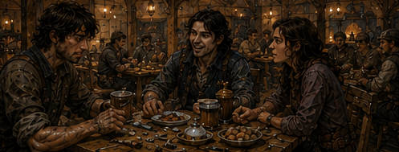
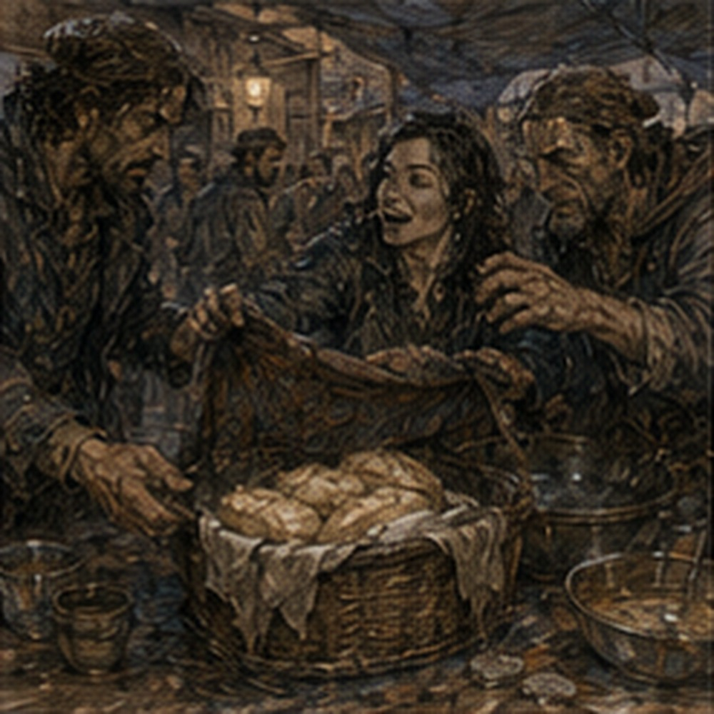

The drink was worse after the third swallow. That seemed backwards. Jorren watched me discover this.
“You keep checking it.”
“I am verifying.”
“It’s beer.”
“It is pretending to be.”
“That’s most beer.”
I drank again. Still bad. The drink shop had no sign. Or had once had one and lost it. Six tables fit inside if everyone agreed not to breathe deeply. Three more sat outside under a patched awning. The floor sloped toward the street. The cups did not match.
A woman behind the counter poured from two barrels and insulted customers according to a system I could not identify. Jorren knew her.
“Another?” she asked.
He looked at me. I had consumed perhaps half a cup. My body felt warmer. Young body. Lower tolerance than memory. Important.
“No,” I said.
Jorren said, “One.” The woman poured him another. Not me. Good. She took his empty.
“You paying tonight?”
“Yes.”
“That’s new.”
“I paid last time.”
“You paid half.”
“Other half was moral support.”
She looked at me.
“You his creditor?”
“No.”
“Debtor,” Jorren said.
I turned.
“Temporary.”
She nodded as if that clarified everything.
“Vale?”
I stopped. Jorren grinned. The woman said, “Everybody owes Vale.”
“I do not think that is true.”
“Everybody interesting.”
That was worse. She went back inside.
“What’s her name?” I asked.
Jorren stared.
“You’ve been here ten minutes.”
“Yes.”
“And now you ask.”
“Yes.”
“Why?”
“Because I want to know.”
He considered.
“Mara.”
I froze. Memory arrived before permission. A letter. Chapter one. No. Not chapter. Morning. Cheap room. A name on paper. Mara. Someone who might have broken my nose. Or maybe not. I looked toward the counter. This Mara was perhaps thirty-five.
Too old to be the same Mara from nineteen-year-old correspondence unless my earlier memory was wrong. Possible. Likely. Different Mara. Jorren saw my face change.
“What?”
“Nothing.”
“You did the thing.”
“What thing?”
“Went somewhere.”
“I am here.”
“No.”
I looked at Mara. She was yelling at a man who had tried to put his boots on a chair. Not my Mara. Probably. Maybe my Mara had also yelled at chairs. Memory did not help. I let it go. Mostly. Jorren said, “You know her?”
“No.”
“Then why stare?”
“Name.”
He waited. I waited. He drank. That was all. Good. He did not ask what the name meant. Not every curiosity required collection. The street in front of us had shifted from workday to evening without announcing it. Carts moved slower. Shop doors closed. Apprentices appeared in groups. A dog slept beneath a bench while three people stepped around it without complaint.
Two men at the next table argued over whether a local fighter had cheated in a prize bout. A woman in blue work trousers arrived carrying a basket of laundry.

Jorren moved his cup before she set the basket on our table. She sat.
“You’re in my chair.”
He looked at the chair beneath him.
“I was here.”
“You’re in my chair.”
“There are six chairs.”
“That one.”
Jorren sighed and moved. She took his seat. I watched. No argument. Interesting. She looked at me.
“New?”
“No,” Jorren said.
“Yes,” I said.
She looked between us.
“Useful.”
“Greg,” Jorren said. “This is Nessa.”
“Nessa?”
“Yes.”
Nothing. Good.
“Nessa, Greg.”
She nodded.
“Old man.”
I looked at Jorren. He looked pleased.
“You told her.”
“He tells everyone,” Nessa said.
“I do not fight like an old man.”
“You complain like one.”
“We have just met.”
“You said beer was pretending.”
I looked at Jorren.
“How much do you talk?”
“Enough.”
Nessa opened the laundry basket. It contained no laundry. Bread. Two wrapped parcels. Three apples. A small jar. Jorren reached. She slapped his hand.
“Pay.”
“I bought the last round.”
“Not from me.”
He put two copper on the table. She gave him bread and one parcel. I stared.
“What?”
“Food,” she said.
“You sell food out of a laundry basket.”
“Yes.”
“Why laundry?”
“So watch doesn’t tax me as a street seller.”
Jorren said, “That’s not why.” Nessa looked at him.
“It helps.”
“What’s the real reason?”
She held up the basket.
“My sister does laundry.”
“Ah.”
That explained almost nothing. I liked it.
“What’s in the parcel?”
“Chicken.”
“How much?”
“Two.”
“Two copper?”
“Yes.”
“Good chicken?”
“No.”
“Honest.”
I bought one. It was not good chicken. It was warm. That made up for some of it. Nessa sold the other parcel to a dockworker at the next table, then took one apple for herself.
“You work with him?” she asked.
She meant Jorren.
“No.”
“Sometimes,” Jorren said.
“Which?”
“We spar.”
“That’s not work.”
“It feels like work when he starts talking.”
I ate. The chicken had too much salt. My body did not care. Hunger had apparently been waiting under the beer. Nineteen did that. Need arrived suddenly. Eat now. Sleep now. Move now. Old Greg had been better at ignoring body signals. Or his body had been quieter. Different. Nessa looked at the wrapped regulator under my arm.
“You carry that everywhere?”
“No.”
“What is it?”
“Regulator.”
“For?”
“Low flow.”
“Of?”
“Depends.”
She nodded. No follow-up. I had expected one. Interesting. Then she asked Jorren, “You working gate tomorrow?”
“Morning.”
“North?”
“Dock.”
“Tell Pellin his mother came by.”
“Why?”
“Because she did.”
“What does she want?”
“She did not tell me.”
Jorren nodded. Existing people. Existing errands. No relation to me. Restful again. I drank more beer. Mistake. Not large. Enough. Warmth moved from stomach to face. My shoulders loosened. The street got louder without actually changing volume. I knew this state. Had known it. Later body had required more. Much more. Young Greg had probably been good at becoming drunk cheaply. Efficient.
I smiled. Jorren saw.
“What?”
“Nothing.”
“You look happy.”
That accusation was strange enough that I stopped.
“I am eating bad chicken.”
“Yes.”
“And bad beer.”
“Yes.”
“And carrying an unfinished regulator.”
“Yes.”
“My sword is at a smith.”
“Yes.”
“I owe Antonius money.”
“Yes.”
“Your point?”
“I don’t have one.”
That was worse. No point. I took another bite. Nessa looked at Jorren.
“He always like this?”
“Yes.”
“You’ve known me how long?”
“Long enough.”
“How long?”
He thought.
“A while.”
“That is not a number.”
“See?”
Nessa nodded. I disliked them. A man came out of the shop carrying a small wooden board with five carved pegs. He put it on our table.
“No.”
Jorren said that immediately. The man said, “One copper.”
“No.”
“Half.”
“No.”
Nessa said, “Play.” Jorren looked at her.
“You play.”
“I have food.”
She shook the basket. The man looked at me.
“Know Five Roads?”
Memory. Yes. Maybe. Board game. Five pegs. Roads between carved points. Simple movement. Or gambling variant? I looked at the board.
“I know something called Five Roads.”
“Same thing?”
“Probably not.”
Jorren groaned.
“Do not teach him.”
The man sat opposite me.
“Half copper.”
I had half copper. Physically? No. Copper coins did not split cleanly. The shop had marks. Credit against drinks. Of course.
“I’ll play.”
Jorren put both hands over his face. The rules took thirty seconds. I had played it before. Not exactly. Future variant had two extra junctions and a blocking rule that did not exist yet. Important.
I lost the first game because I used the later blocking assumption. The man smiled.
“Again?”
“Yes.”
Jorren said, “No.” I looked at him.
“You are not involved.”
“I know what your face does.”
“My face is playing.”
“Your face is building a war.”
Nessa laughed. Second game. I won. Not because I knew the future. Because the man favored the left crossing after losing center. Third game. He changed. Good. I lost. Fourth. Won. Fifth. Nessa put her apple core on the board.
“Stop.”
I looked at her.
“Why?”
“You’re not talking anymore.”
“That is usually considered improvement.”
Jorren said, “He does that.”
“Does what?”
“Falls into things.”
I looked at the board. Five roads. Tiny system. Bounded. Legible. Wonderful. I wanted another. Very much. Not for money. For the shape. The man waited. I could see three adjustments already. He had started baiting my center response. I wanted to see whether he knew I knew. One more. That phrase had history. Cards. Gambling. One more hand. One more person.
One more test. I looked at Jorren. He was not correcting me. He was drinking. Nessa was packing the remaining bread. The man had his hand on the first peg. I said, “One more.” Jorren laughed.
“Of course.”
We played. I lost. Badly. The man had been waiting for the exact line I wanted to test. I stared at the board. Then laughed. Not politely. Actually laughed. He grinned.
“There.”
“What?”
“You think too much.”
“That is not why I lost.”
“Yes.”
“No. I lost because you trained a false response over four games and punished the fifth.”
He blinked. Jorren groaned. Nessa said, “You could have just lost.”
“I did just lose.”
“No. You’re making losing paperwork.”
The man collected the half-copper mark. I nearly asked for another game. Did not. Progress? Maybe. Mostly I was hungry again. Nessa had one bread heel left. I bought it. She looked at the coins in my hand.
“You paid twice.”
I had. Beer. Young body. Bad arithmetic. She gave one copper back. I stared at it.
“That is mine.”
“Yes.”
“You could have kept it.”
“Yes.”
“Why didn’t you?”
She looked confused.
“Because it’s yours.”

No system. No lesson. Fine. I ate bread. By the time the lamps were lit, the table had changed people twice. Nessa left with the empty basket. She had somewhere to be.
“Sister will murder me,” she said.
“For?”
“Basket.”
“That seems excessive.”
“Then you haven’t met her.”
She left. The Five Roads man disappeared. Mara brought Jorren water without being asked. He looked offended. She said, “You work tomorrow.” He drank it. Again. Existing life. Jorren had routines here. People knew his schedule. People knew which chair Nessa claimed. Mara knew when to stop pouring him beer. I had entered it. Not created it.
That felt different from following him to a tavern the first time. Maybe because I had stopped trying to understand what every piece meant. Mostly.
“What are you doing tomorrow?” I asked.
“Dock gate.”
“After?”
“Depends.”
“On?”
“Work.”
“That is circular.”
“It’s tomorrow.”
I nodded. My head felt pleasantly slow. That was dangerous. Also nice. I remembered being drunk at nineteen. Not a specific night. A category. Warm face. Fast laughter. Poor decisions. Walking farther than necessary because someone else was going that way. Kissing people whose names later became uncertain. Getting punched. Punching back. Losing buttons. Waking thirsty. Old Greg had compressed all of that into immaturity.
Some of it was. A lot. Still. There had been pleasure in being stupid before the consequences were expensive enough to have departments. I looked at my hands. No liver spots. No scars from half the things I remembered. Beer cup between them. Jorren said, “You’re doing it.”
“What?”
“Leaving.”
“I am here.”
“No.”
I tried to explain. Did not. Instead I said, “I used to drink more.” Jorren looked at the half-finished second cup I had somehow acquired.
“When?”
Danger. Not much. I smiled.
“Younger.”
“You are nineteen.”
“Exactly.”
He stared. Then laughed. Good. Deflected. Maybe too strange. Fine. Mara came by.
“Closing soon.”
Jorren looked at the street.
“It’s early.”
“It’s late for you.”
“Why?”
“You owe me.”
He checked his pocket. Nothing. I looked at him. He looked at me.
“No.”
I smiled.
“How much?”
“Two copper.”
He said, “I have money.”
“Then show it.”
He searched again. One copper. A button. A small nail. No second copper. I put down one. Jorren pointed.
“No.”
“You paid for my first drink.”
“Someone else’s.”
“Still.”
“I owe you.”
“Yes.”
“Then subtract it.”
“From what?”
“Whatever.”
“That is not accounting.”
Mara took the copper.
“Resolved.”
I stared.
“No ledger?”
She walked away. Hostile systems everywhere. Jorren stood. Too fast. He swayed. Not badly. I laughed. He shoved my shoulder. My nineteen-year-old body shoved back before old judgment finished deciding whether this was socially appropriate. Jorren shoved harder. I stepped. Caught his wrist. Not combat. Play. He turned. I turned with him. For half a second the street became practice yard. Weight.
Balance. Hip. Then my ribs objected. I let go.
“Fuck.”
Jorren immediately stopped.
“You good?”
“Yes.”
“You made a noise.”
“Ribs.”
“Darrowmere?”
“Yes.”
He nodded. No lecture. No apology. Just recalibration. We started walking.
“Where?”
I asked after half a block.
“Home.”
“Yours?”
“Mine.”
“Why am I coming?”
“You followed me.”
I looked behind. The drink shop was already half a block back. He was right. I had simply walked with him.
“I need my room.”
“Then turn.”
I did not. Not immediately. The night air felt good. My body wanted movement after sitting. Young legs. Slight beer. No sword at hip. That absence felt wrong. Also light. We walked three more streets.
Jorren pointed out a baker who cheated on morning rolls by making them too small. I asked how he knew. He said because he bought them. That was evidence. A woman dumped wash water from a second-floor window and missed us by luck or skill. Jorren shouted up. She shouted back. Apparently they knew each other. I did not ask her name.
At the next corner he stopped.
“This is me.”
The building had four narrow floors and a front door painted green badly.
“You live here?”
“Yes.”
“Alone?”
“No.”
“Who?”
He looked at me.
“People.”
Reasonable. A male voice from an upstairs window shouted, “Jorren, you owe me four copper.” I looked at him. He looked at the window.
“No.”
The voice said, “Five now.”
“Fuck off, Tam.”
A laugh. Friend. Roommate. Coworker. Brother? Not my problem. Jorren opened the door.
“You coming up?”
I almost said why. Caught it. For what purpose? Bad question. I looked at the stairs. Then at the regulator under my arm. Then at my room three streets away.
“Not tonight.”
Jorren nodded. No disappointment.
“Tomorrow?”
“Maybe.”
He went inside. That was all. I stood outside the green door for a moment. The upstairs voice said something about piss. Jorren shouted back. Ordinary. I walked home. My body was more drunk than my mind considered justified.
This offended me until I remembered the body got a vote. At my room I set the regulator on the desk. Removed my boots. Missed the chair with one. Sat on the bed. The mirror showed a young man with flushed cheeks and messy hair. Not impressive. Alive. I looked away before it became a theme. Water. Drink water. Old experience useful.
I drank two cups. Then a third. The second life had been built around advantage so far. Money sooner. Magic sooner. People sooner. Avoid mistakes. Compress years. Tonight had produced nothing. I had lost half a copper at Five Roads. Bought bad chicken. Paid Jorren’s beer. Learned Mara’s name. Met Nessa. Walked three extra streets.
My ribs hurt because I had shoved a friend like an idiot. Nothing advanced. I lay back. That should have bothered me. It did not. Not enough. Morning punished me. Not dramatically. My head did not split. No vomiting. No divine judgment. Dry mouth. Heavy eyes. Stiff ribs. And hunger violent enough to qualify as political. I sat up.
“Oh.”
Nineteen. Again. Recovery was better. Tolerance was worse. Tradeoffs. I checked my channels. Quiet. No heat. No pressure. Good. LIMITED CASTING tag still there. Less good. The regulator waited. My sword did not. That was the first practical problem. Second: food. Third: Hessa. Was I scheduled? I searched notes. Yes. Late morning. Good. Sword first. Food before sword. No. Food first. Strongly.
I dressed. Outside, the city was offensively functional. Bread smell. Carts. Children going somewhere at speed. Workers already annoyed. I bought two rolls from a stall. Too small. I stopped. Baker. Jorren’s baker? No. Different street. I laughed alone. The seller looked at me.
“Problem?”
“No.”
I ate both. At the smith, the woman was already working. My sword lay on the counter. Edge clean. Chip reduced. Not erased. Good. She saw me.
“Two copper paid.”
“Yes.”
She handed it over. I checked balance. Same. Edge. Better.
“Could have taken more out.”
“Why didn’t you?”
“Would change the line.”
Good. Competence. I admired it. Did not ask what else she could become. Progress. Maybe.
“What’s your name?”
She looked at me.
“Dara.”
“Greg.”
“I know.”
Of course.
“Alden talks?”
“Yes.”
“Too much.”
“Yes.”
I sheathed the sword.
“Wrist?”
“Better.”
“Good.”
That was all. I left before I could turn her into a question. Hessa’s practice room had someone else in it. Good. A man perhaps twenty-five stood over a shallow bowl trying to keep three metal beads suspended in a thin mana field. One bead dropped. Then another. He swore. Hessa said, “Again.” I waited outside. Not because she told me. Because there was a lesson happening.
That felt obvious. Five minutes later the man came out sweating. He saw my tag.
“Restricted?”
“Yes.”
“Lucky.”
I looked at him. He kept walking. I entered. Hessa pointed at the mat.
“You drank.”
I stopped.
“How?”
“You smell like old beer.”
“Oh.”
Not magical perception. Excellent.
“Not much.”
“Doesn’t matter.”
“I drank water.”
“Congratulations.”
She checked my eyes. Pulse. Hands. Then the tag.
“Headache?”
“Normal.”
“Meaning?”
“Dry. Mild. Not channel.”
“You know the difference?”
“Yes.”
She accepted that. Good.
“Cast?”
“No.”
“Wanted to?”
“Yes.”
“Didn’t?”
“Yes.”
She looked at me. That was apparently notable. I became defensive.
“I follow instructions.”
“No.”
“Sometimes.”
“Yes.”
She had me produce a tiny Barrier. Coin-sized. Two breaths. Release. Clean. Again. Three breaths. Clean. Stop. I stopped. No pressure. She checked my palm. Then removed the LIMITED CASTING tag. I stared.
“Done?”
“No repeated pressure work today.”
“That sounds limited.”
“It is less limited.”
“New tag?”
“No.”
“Then how will strangers control me?”
“They won’t.”
Dangerous.
“What can I do?”
“Small casting. Normal beginner volume. Stop on symptoms. No deliberate limit testing.”
“That last one persists?”
“Yes.”
“For how long?”
“Until you become less stupid.”
“So permanent.”
“Maybe.”
I smiled. She did not. But almost. Maybe.
“Barrier work tomorrow?”
“If you remain symptom-free.”
There. Magic returning. Slowly. Real. My chest lifted. Hessa saw. Of course.
“Do not celebrate by casting in the street.”
“I wasn’t going to.”
“You were.”
“I was going to consider it.”
“That is the first half.”
Fair. Outside, I touched the bare wrist where the tag had been. No dramatic freedom. Just skin. I wanted to cast. Very much. Instead I took the regulator from my bag. Mechanical test. Pell had given me something to do. Could test with water. No mana. I headed toward a public pump. Halfway there, someone called my name. Alden. He was across the street with Berren.
Berren limped slightly. Boot thicker on one side. Alive alive. Alden raised a hand. Berren raised two fingers. I could cross. Ask about Darrowmere. Drainage ditch. Fire. Creature turns. Or I could test the regulator. Or go back to Antonius. Or find Jorren after dock shift. Too many. Good. Normal. I crossed the street. Not because Berren was historically important. Not because Alden needed improvement.
Because they were there.